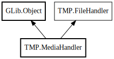

MediaHandler
Object Hierarchy:

Description:
public class MediaHandler :
Object,
FileHandler
Media File Handler implementing FileHandler interface.
Content:
Structs:
Creation methods:
Methods:
- private void build_audio_ui (ref int row)
Build the UI for audio properties.
- private void build_video_ui (ref int row)
Build the UI for video properties.
- private string detect_bitrate_mode (TagList? tags, uint current_bitrate)
Detect the bitrate mode for an audio stream.
- private void display_embedded_images (ref int row)
Display embedded images in the grid.
- private void extract_tags_loose (out string title, out string artist, out string album, out string genre, out string album_artist, out uint track, out string date)
Extract common tags loosely from container and all streams.
- private void extract_tags_strict_container (out string title, out string artist, out string album, out string genre, out string album_artist, out uint track, out string date)
Extract common tags strictly from the container-level stream info.
- private void gather_images_generic (TagList? t)
Gather embedded images from a Gst.TagList by checking all tags for
Gst.Sample values.
- private string get_container_name ()
- private string get_duration_string ()
Get the duration of the media file as a formatted string.
- private T get_first_stream<T> ()
Get the first stream of a specific type from the media info.
- public string get_page_title ()
Get the title for the property page.
- public Widget get_properties_panel ()
Get the properties panel widget for the media file.
- private string get_readable_codec (Structure structure)
Convert a Gst.Structure codec name to a human-readable format.
- private List<T> get_streams<T> ()
Get a list of streams of a specific type from the media info.
- private string? get_tag_string (TagList? tags, string tag_name)
Get a string value for a specific tag from a Gst.TagList.
- private bool is_valid_image (Sample s)
Check if a Gst.Sample likely contains image data.
- private void parse_audio_stream (DiscovererAudioInfo a, out string codec, out string channels, out string rate, out string bitrate, out string br_mode, out string lang)
Parse audio stream details into output parameters.
- private void parse_common_tags (TagList? tags, ref string t, ref string a, ref string al, ref string g, ref string aa, ref uint trk, ref string d)
Parse common tags from a Gst.TagList into provided references.
- private void parse_video_stream (DiscovererVideoInfo v, out string codec, out string res, out string fps, out string fr_mode, out string bitrate, out string br_mode, out string lang)
Parse video stream details into output parameters.
- private Pixbuf? scale_pixbuf_to_max_height (Pixbuf pix, int max_height = 250)
Scale a Gdk.Pixbuf to a maximum height while maintaining aspect ratio.
Fields:
Inherited Members:
All known members inherited from class GLib.Object
- @get
- @new
- @ref
- @set
- add_toggle_ref
- add_weak_pointer
- bind_property
- connect
- constructed
- disconnect
- dispose
- dup_data
- dup_qdata
- force_floating
- freeze_notify
- get_class
- get_data
- get_property
- get_qdata
- get_type
- getv
- interface_find_property
- interface_install_property
- interface_list_properties
- is_floating
- new_valist
- new_with_properties
- newv
- notify
- notify_property
- ref_count
- ref_sink
- remove_toggle_ref
- remove_weak_pointer
- replace_data
- replace_qdata
- set_data
- set_data_full
- set_property
- set_qdata
- set_qdata_full
- set_valist
- setv
- steal_data
- steal_qdata
- thaw_notify
- unref
- watch_closure
- weak_ref
- weak_unref
All known members inherited from interface TMP.FileHandler